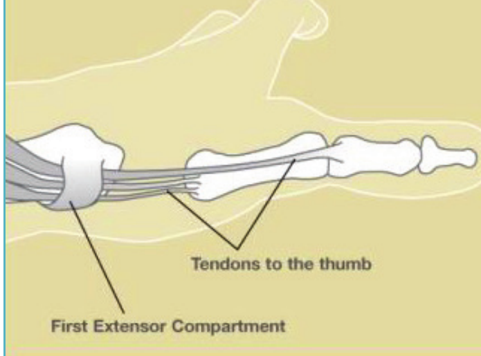
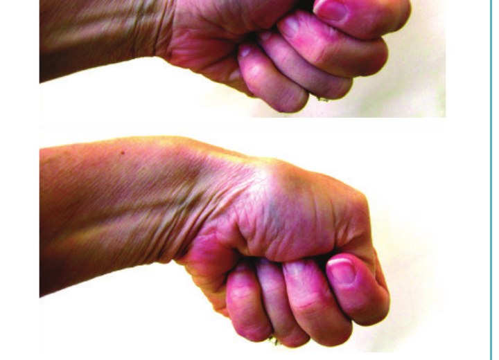

Condición
Tenosinovitis de De Quervain
Inflamación dolorosa de los tendones del pulgar en la muñeca. A menudo se resuelve con férula y una sola inyección de esteroide.

Illustration © American Society for Surgery of the Hand
¿Qué es la De Quervain?
Dos tendones que mueven el pulgar comparten un túnel apretado en el lado del pulgar de la muñeca. Cuando el revestimiento de ese túnel se inflama, los tendones no pueden deslizarse bien y cada movimiento del pulgar se vuelve doloroso. Esto es la tenosinovitis de De Quervain.
Síntomas comunes
- Dolor en el lado del pulgar de la muñeca, justo encima de la base del pulgar
- Dolor que empeora al pellizcar, levantar o retorcer
- Hinchazón sobre la muñeca y a veces sensación de enganche o chasquido
- Dificultad para levantar un bebé, una cafetera o una bolsa de compras
¿Por qué ocurre?
La De Quervain se ve con frecuencia en padres nuevos (a veces llamada "pulgar de mamá") por la forma en que se levanta a los bebés, y en personas que hacen mucho movimiento repetitivo con el pulgar. Es más común durante y después del embarazo y en personas mayores de 40. A veces aparece sin causa clara.
Opciones de tratamiento
Tratamiento no quirúrgico
- Férula para el pulgar. Una férula que mantiene el pulgar y la muñeca inmóviles permite que los tendones inflamados descansen. Es más eficaz en las primeras semanas.
- Cambios de actividad. Evitar los movimientos que provocan dolor, especialmente doblar la muñeca hacia el lado mientras se pellizca.
- Inyección de esteroide. Una inyección de cortisona en el túnel del tendón es muy efectiva y cura el problema para la mayoría de los pacientes, a menudo con una sola dosis.
Tratamiento quirúrgico
- Liberación del primer compartimiento dorsal. Si la férula y las inyecciones no funcionan, una pequeña cirugía abre el túnel apretado para darle más espacio a los tendones. Es un procedimiento ambulatorio corto con anestesia local a través de una incisión pequeña al lado de la muñeca.
Qué esperar en su visita
El Dr. Barrera le preguntará sobre sus síntomas y examinará su muñeca, incluida una maniobra que reproduce el dolor al doblar la muñeca con el pulgar metido. El diagnóstico suele ser claro solo con el examen y rara vez se necesitan imágenes.

Illustration © American Society for Surgery of the Hand
Llámenos si la muñeca se pone caliente, muy hinchada o roja, si tiene fiebre, o si nota una herida abierta o corte reciente cerca del área dolorosa.
¿Preguntas?
Llame a su consultorio para preguntas no urgentes:
- NYU Langone Laurelton · 646-501-4950
- NYU Orthopedic, Woodside · 929-429-3222
- NYU Orthopedic, Richmond Hill · 718-206-6923
- Jamaica Hospital Ambulatory Care Center (ACC) · 718-301-0720
Consulte la información de nuestras oficinas para direcciones y números de fax.